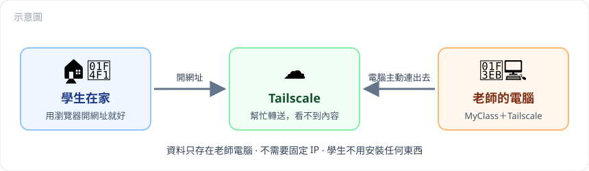
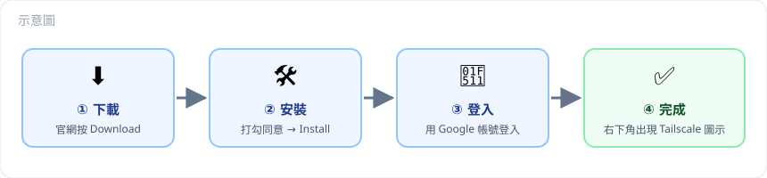
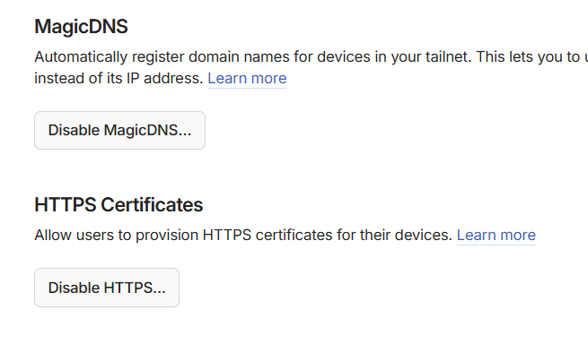
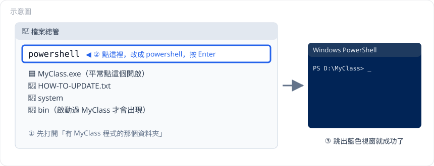
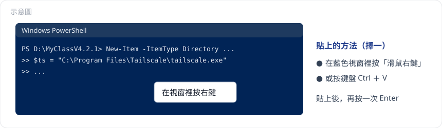
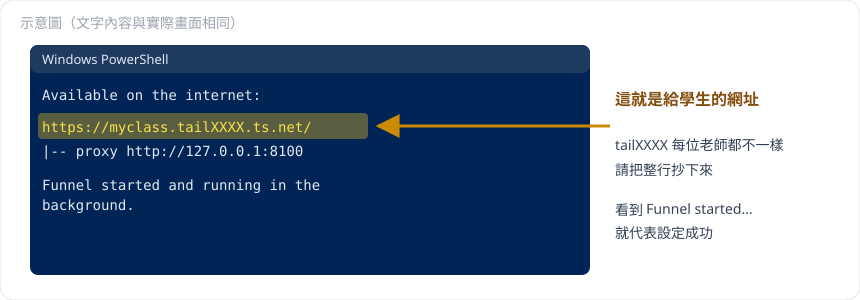
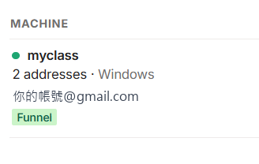
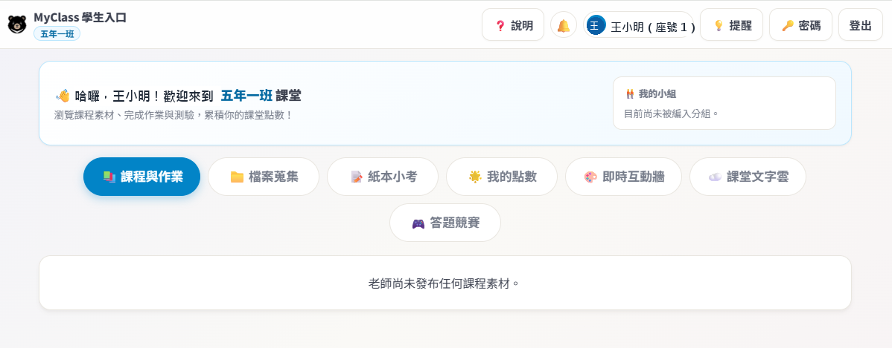

設定完成後，學生在家裡用手機、平板或電腦打開一個網址，就能看教材、看作業和成績、繳交作業，跟在學校一樣。
不需要懂電腦程式，跟著步驟做就可以了。

請先確認下面幾件事都準備好了：
MyClass.exe，螢幕右下角有 MyClass 圖示。不確定的話，請問提供 MyClass 給你的老師。
tailscale-setup）。^ 才看得到），按一下圖示，選「Log in…」。
| 按鈕上寫的字 | 代表什麼 | 要做什麼 |
|---|---|---|
| Disable MagicDNS… / Disable HTTPS… | 已經開啟 ✅ | 不用按，維持原狀 |
| Enable MagicDNS / Enable HTTPS | 還沒開啟 | 請按下去開啟 |
這個步驟要打開一個「可以輸入指令的視窗」（叫做 PowerShell），然後貼上一段文字。不用擔心，只要複製、貼上就好，不需要自己打字。

MyClass.exe、MyClassV…exe 和 system 資料夾）。powershell（會取代原本的文字），然後按鍵盤的 Enter。New-Item -ItemType Directory -Force bin | Out-Null
Set-Content -Path bin\remote_access.json -Value '{ "enabled": true, "port": 8100 }' -Encoding Ascii
$ts = "C:\Program Files\Tailscale\tailscale.exe"
& $ts set --unattended=true
& $ts set --hostname=myclass
& $ts funnel --bg 8100
& $ts funnel statusCtrl + V）貼上。
myclass，學生的網址會比較好記。第一次做這個步驟時，藍色視窗可能會出現這段英文：
Funnel is not enabled on your tailnet.
To enable, visit:
https://login.tailscale.com/f/funnel?node=........意思是「需要你先同意開啟這個功能」。請這樣做：
Ctrl 鍵，再用滑鼠點那個網址，瀏覽器就會打開。藍色視窗出現下面這樣的文字，就代表設定成功了：

https://myclass.tail……ts.net/ 就是學生在家要用的網址。每位老師的網址都不一樣，請把整行抄下來，或選取後按右鍵複製。myclass 這台電腦下面有綠色的 Funnel 標籤，就表示成功。
步驟 3 打開了 MyClass 的「學生在家連線」功能，要把 MyClass 關掉再重新開啟才會生效：
^ 才看得到），按右鍵，選「結束 MyClass」。
把網址做成 QR Code（可以用 Google 搜尋「QR Code 產生器」），貼在聯絡簿、班級網頁或 Google Classroom 上。以下是可以直接使用的通知範例，按「📋 複製」後貼到你要發布的地方，再把網址換成你自己的：
📢 各位同學：在家也可以使用 MyClass 了！
網址：https://myclass.tail……ts.net（請換成老師的網址）
1. 第一次使用前，請先在學校把密碼改好。密碼要「至少 8 個字」，而且「同時有英文字母和數字」。太簡單的密碼只能在學校使用，在家會無法登入。
2. 在家打開上面的網址，用平常的帳號、密碼登入。
3. 為了安全，在家登入 7 天後要重新登入一次。
4. 在家上傳的檔案，每個檔案最多 50MB。想暫停學生在家連線（例如寒暑假）：照步驟 3-1 打開藍色視窗，貼上下面這行並按 Enter：
& "C:\Program Files\Tailscale\tailscale.exe" funnel --https=443 off想恢復：照步驟 3 重新貼上那段設定文字就可以了。
unexpected state: NoStatehttps://100.……C:\MyClass）C:\MyClass\bin 複製到新資料夾 → 解除安裝舊版 → 點兩下新資料夾的 MyClass.exe。換好之後，再從步驟 3 開始設定。這些規則只對「從校外連線」生效，學生在學校使用時不受影響。
| 項目 | 規則 |
|---|---|
| 密碼門檻 | 在家登入的密碼必須至少 8 個字，並同時包含英文字母和數字；仍在使用預設密碼（學號）的帳號不能在家登入 |
| 登入失敗次數 | 同一個來源 IP 10 分鐘內失敗 30 次，封鎖該 IP 15 分鐘；同一個帳號在外網 10 分鐘內失敗 10 次，只封鎖這個帳號的「在家登入」15 分鐘，學生在學校照常能登入 |
| 密碼提醒 | 外網登入失敗時一律不顯示 |
| 登入有效期 | 在家登入 7 天後需重新登入；學校登入的裝置拿回家用，也只在登入後 7 天內有效 |
| 修改密碼 | 學生改密碼（或老師重設密碼）後，所有裝置上的舊登入立即失效 |
| 上傳檔案 | 每個檔案最多 50MB（作業、紙本小考照片、即時互動牆在校內也是 50MB；檔案蒐集在校內維持 250MB） |
| 附件 | 只能開啟自己班級的教材、即時互動牆圖片，以及自己（或自己小組）的作業與檔案；老師的觀察紀錄、日誌附件一律無法開啟 |
| 錯誤訊息 | 伺服器發生錯誤時只顯示一般性訊息，不顯示內部細節 |
| 教師端 | 教師的頁面、API、登入一律無法從外網存取 |
127.0.0.1:8100，區網內其他裝置連不到；只有同一台電腦上的 Tailscale 會連它。bin\remote_access.json（與資料庫 classroom_record.db 同一個資料夾），內容為 { "enabled": true, "port": 8100 }。也可以改用環境變數 MYCLASS_REMOTE_PORT=8100。兩者都沒有設定時，這個功能完全不啟動。npm run dev）的 bin 在專案資料夾內；可攜版的 bin 在 MyClass.exe 旁邊。[MyClass] 學生在家專用入口：http://127.0.0.1:8100（請用 Tailscale Funnel 對外開放這個埠）家用寬頻沒有固定 IP 也可以使用，不需要設定家裡的路由器。網址綁的是電腦而不是 IP，同一台筆電在學校、家裡之間帶來帶去，給學生的網址都不會變。
$env:MYCLASS_HOST = "127.0.0.1"
npm run dev老師照常用 https://localhost:8000；學生透過 Tailscale 網址在家連線不受影響。
用手機行動網路開啟：
https://你的網址/ → 應出現學生登入畫面https://你的網址/api/courses → 應顯示「這個功能只能在學校區網內使用。」https://你的網址/guide → 同上以下指令都在 PowerShell 執行。剛安裝完 Tailscale 時，PowerShell 可能還找不到 tailscale 指令，所以一律寫完整路徑；重新開一個 PowerShell 視窗後，可以直接打 tailscale。
| 用途 | 指令 |
|---|---|
| 查看連線狀態 | & "C:\Program Files\Tailscale\tailscale.exe" status |
| 查看 Funnel 狀態 | & "C:\Program Files\Tailscale\tailscale.exe" funnel status |
| 暫停對外 | & "C:\Program Files\Tailscale\tailscale.exe" funnel --https=443 off |
| 恢復對外 | & "C:\Program Files\Tailscale\tailscale.exe" funnel --bg 8100 |
| 清除所有 Funnel 設定 | & "C:\Program Files\Tailscale\tailscale.exe" funnel reset |
| 重新啟動 Tailscale 服務（需系統管理員） | Restart-Service Tailscale |
unexpected state: NoStateset --unattended=true）。開啟 Tailscale 程式，或以系統管理員身分執行 Restart-Service Tailscale 即可。老師電腦本身會走 Tailscale 內部線路，自己連得上不代表外網連得到。用瀏覽器開啟（換成自己的網址）：
https://dns.google/resolve?name=myclass.tailXXXX.ts.net&type=A回應中有 "Answer" 且 IP 不是 100. 開頭，才代表已生效。官方說明一般 10 分鐘內生效，實際可能要等到約 1 小時，尤其是剛開啟 Funnel 或剛改過電腦名稱時。超過 1 小時仍沒有記錄時：
funnel reset，再執行 funnel --bg 8100 重新建立。Restart-Service Tailscale。funnel reset 再 funnel --bg 8100 重新建立，並等待新網址的公開記錄生效。建議在第一次開啟 Funnel 前就決定好名稱。100.x.x.x& "C:\Program Files\Tailscale\tailscale.exe" funnel --https=443 offbin\remote_access.json（或把 enabled 改為 false），並重新啟動 MyClass。